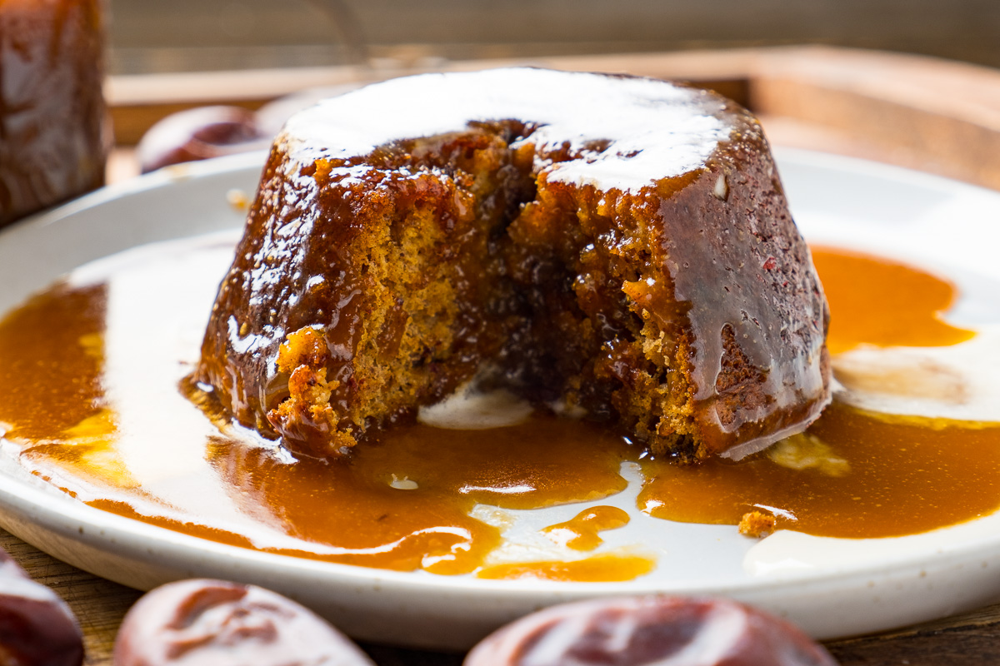

sticky toffee pudding recipe

Sticky toffee pudding is a British dessert consisting of a moist sponge cake made
with finely chopped dates, covered in a toffee sauce and often served
with a vanilla custard or vanilla ice-cream.
Ingredients
- 1 ¾ cups pitted, chopped dates
- 1 teaspoon baking soda
- ¾ cup boiling water
- ⅓ cup butter
- ¾ cup white sugar
- 2 eggs, beaten
- 1 ⅛ cups self-rising flour
- ¾ cup packed brown sugar
- ⅓ cup butter
- ⅔ cup evaporated milk
- 1 teaspoon vanilla extract
Steps
- Preheat oven to 350 degrees F (175 degrees C). Grease an 8-inch square baking dish.
- In a small bowl combine the dates and baking soda. Pour enough boiling water over the dates to just cover them.
- Cream 1/3 cup of butter with the white sugar until light. Beat in the eggs and mix well to combine.
- Add the flour and date mixture (including water) to the egg mixture and fold to combine. Pour the batter into the prepared baking dish.
- Bake in the preheated oven until a tester comes out clean, 30 to 40 minutes. Let cool slightly and prepare the sauce.
- To Make Caramel Sauce: In a small saucepan combine the brown sugar, 1/3 cup butter, and evaporated milk. Cook over medium heat and bring to boil.
Turn heat down and simmer for 5 minutes, stirring occasionally. Remove from heat and stir in the vanilla.
Pour the sauce over individual servings of warm cake.